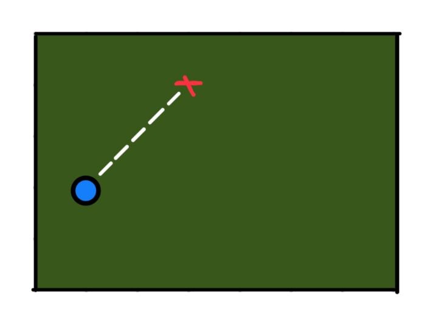
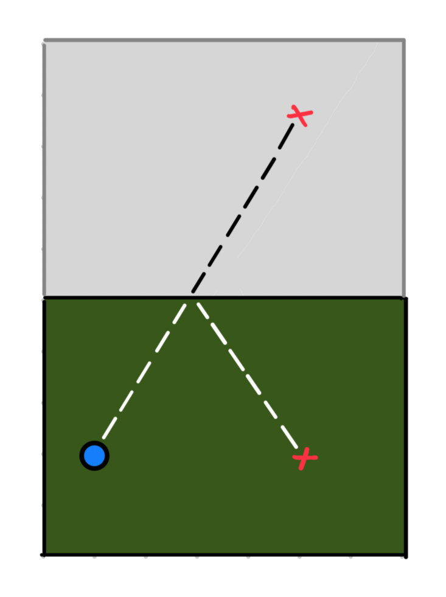

Stellen Sie vor, dass Sie einen Kugel auf einem völlig reibungsfreien Billardtisch haben, und Sie möchten vorhersagen, wann er in einem bestimmten Position befindet sich (in einer Ecktasche, zum Beispiel) nachdem er in einer bestimmten Richtung gerollt wurde und gegen die Rahmen des Billardtischs abgeprallt wurde. Eine nette Strategie für dieses Problem besteht darin, Reflexionen von der Tisch zu fliesen, oder einen unendlich großen Tisch zu machen, so dass die Flugbahn des Kugel vereinfacht wird.
Befassen wir uns am ersten mit der einfachsten Fall - der bestimmten Position für den Kugel ist auf seiner Flugbahn, bevor er gegen die Kanten abgeprallten muss.
Dies ist ein einfaches Problem zu lösen - wir müssen nur die anfängliche Geschwindigkeit von dem Kugel im Betracht ziehen, und berechnen, wann sie an diese Position ankommt.

Was wäre, wenn der Kugel einmal abgeprallt und umgeleitet von der Rahme sein muss, bevor er in der bestimmten Position erreicht? Statt einer neuen Flugbahn befassen, könnten wir einfach eine Spiegelung von dem Billardtisch parkettieren und dabei einen doppelt so großen Tisch machen. Dann müssen wir nur noch eine neue äquivalente Position auf dem großen Tisch finden, statt herauszufinden, wo die neue Flugbahn des Kugeln auf dem originalen Billardtisch liegt.

Und wenn es viele Male abgeprallt? Wir müssen nur noch mehrmals den Tisch reflektieren und parkettieren.
Aber wie viele Male wird es abprallen, bis es eine bestimmte Position erreicht? Es ist eine Frage, auf die ich noch nicht antworten kann.